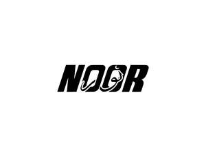

Trade Mark Journal No.2025/013 28 March 2025
UK00004169841 6 March 2025 (9,14,18,24,25,35,39)

- Class 9
- Phone cases; Cell phone cases; Mobile phone cases; Cell phone covers; Cases for mobile phones; Mobile phone covers; Waterproof smartphone cases.
- Class 14
- Jewellery; Necklaces [jewellery]; Brooches [jewellery]; Jewellery brooches; Jewellery, including imitation jewellery and plastic jewellery; Pendants [jewellery]; Bracelets [jewellery]; Brooches [jewellery, jewelry (Am.)]; Ornaments [jewellery]; Amulets being jewellery; Amulets [jewellery]; Pearls [jewellery]; Trinkets [jewellery]; Necklaces [jewellery, jewelry (Am.)]; Jewelry; Fashion jewellery; Gold jewellery; Lockets [jewellery]; Brooches [jewelry]; Jewelry brooches; Brooches being jewelry; Jade [jewellery]; Clasps for jewellery; Charms [jewellery]; Charms for jewellery; Jewellery charms; Enamelled jewellery; Ornaments [jewellery, jewelry (Am.)]; Pearls [jewellery, jewelry (Am.)]; Items of jewellery; Jewellery items; Costume jewellery; Decorative brooches [jewellery]; Amulets [jewellery, jewelry (Am.)]; Rings being jewellery; Trinkets [jewellery, jewelry (Am.)]; Bracelets [jewellery, jewelry (Am.)]; Pewter jewellery; Rings [jewellery]; Jewellery stones; Cloisonné jewellery [jewelry (Am.)]; Wristlets [jewellery]; Cloisonné jewellery; Cloisonne jewellery; Charms [jewellery, jewelry (Am.)]; Lockets [jewellery, jewelry (Am.)]; Chains [jewellery, jewelry (Am.)]; Jewellery products; Rings [jewellery, jewelry (Am.)]; Ivory [jewellery, jewelry (Am.)]; Shoe jewellery; Precious jewellery; Crucifixes as jewellery; Necklaces [jewelry]; Agate as jewellery; Jewellery chains; Chains [jewellery]; Ivory jewellery; Jewellery chain; Jewellery in semi-precious metals; Medallions [jewellery, jewelry (Am.)]; Jewellery caskets; Paste jewellery [costume jewelry (Am.)]; Paste jewellery [costume jewelry [Am.]]; Gold plated brooches [jewellery]; Body jewellery.
- Class 18
- Bags; Tote bags; Luggage bags; Duffle bags; Duffel bags; Carry-on bags; Bags for clothes; Drawstring bags; Carry-all bags; Belt bags and hip bags; Leather bags; Duffel bags for travel; Shoe bags; Belt bags; Travel bags; Leather bags and wallets; Shoulder bags; Waterproof bags; Hand bags; Gym bags; Cabin bags; Bags for climbers; Mesh bags for shopping; Knitting bags.
- Class 24
- Canvas for tapestry; Canvas for tapestry or embroidery; Canvas for embroidery; Embroidery fabric.
- Class 25
- Clothes; Clothing; Jackets [clothing]; Clothes for sports; Jackets (Stuff -) [clothing]; Jerseys [clothing]; Woolen clothing; Hoods [clothing]; Ready-to-wear clothing; Belts [clothing]; Knitwear [clothing]; Silk clothing; Ready-made clothing; Embroidered clothing; Casual clothing; Jackets; Windproof jackets; Denim jackets; Leather jackets; Rainproof jackets; Wind-resistant jackets; Waterproof jackets; Sheepskin jackets; Quilted jackets [clothing]; Men's and women's jackets, coats, trousers, vests; Suede jackets; Bomber jackets; Weatherproof jackets; Motorcycle jackets; Padded jackets; Shell jackets; Heavy jackets; Knit jackets; Sports jackets; Polar fleece jackets; Hooded sweatshirts; Gloves for apparel; Trousers; Hoodies; Sweatshirts; Sweatpants; Hooded sweat shirts; Short-sleeved T-shirts; Turtleneck pullovers; Turtleneck sweaters; Knit shirts; Fleece pullovers; Fleece jackets; Corduroy shirts; T-shirts; Dress pants; Camouflage jackets; Casual shirts; Sweat shirts; Trousers shorts; Jogging pants; Corduroy trousers; Waterproof trousers; Pants; Casual trousers; Corduroy pants; Short trousers; Denim pants; Leather pants; Jeans; Sweat pants; Khakis; Printed t-shirts; Tee-shirts; Dress shirts; Polo shirts; Hats; Beanie hats; Baseball hats; Fashion hats; Bucket hats; Baseball caps and hats; Rain hats; Sun hats; Ski hats; Scarves; Scarfs; Bandanas [neckerchiefs]; Visors [hatmaking]; Bandannas; Bandanas; Headbands; Knitted caps; Headdresses [veils]; Sweaters; Cashmere scarves; Shawls and headscarves; Shawls; Shawls and stoles; Cardigans; Knitted clothing; Jumpers [sweaters]; Cashmere clothing; Headscarves; Turbans; Polo sweaters; Knitwear; Belts for clothing; Chino pants; Yoga pants; Cargo pants; Waterproof pants; Ski pants; Weatherproof pants; Socks; Gloves; Gloves [clothing]; Gloves as clothing; Knitted gloves; Thobes.
- Class 35
- Retail services connected with the sale of clothing and clothing accessories; Retail services relating to clothing; Retail services in relation to clothing; Retail services in relation to clothing accessories; Online retail services relating to clothing; Online retail store services relating to clothing; Online retail store services in relation to clothing; Retail services in relation to fashion accessories; Retail services relating to jewelry; Online retail services relating to jewelry; Mail order retail services for clothing; Retail services in relation to bags; Online retail services relating to luggage; Online retail services for downloadable virtual clothing; Online retail services relating to handbags; Mail order retail services for clothing accessories; Mail order retail services connected with clothing accessories; Online retail services in relation to downloadable virtual clothing.
- Class 39
- Transportation of clothing; Packaging clothing articles for transportation; Transportation of luggage; Transportation and storage of goods; Storage of clothing; Arranging transportation of goods; Arranging the transportation of goods.
Noor Garments Ltd